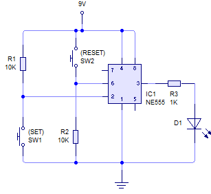

Electrónica analógica 4º E.S.O.
El 555 como biestable
Este circuito tiene dos estados estables (en los que se permanece indefinidamente), según este funcionamiento:
Encontramos dos pulsadores, SET y RESET. Al activar SET, se activa la salida, que permanecerá activada hasta que se active RESET. Sucesivas pulsaciones de SET con la salida activada no producen ningún cambio en ella. Sólo se obtiene la desactivación al accionar RESET.
Así mismo, sucesivas pulsaciones de RESET no provocan ningún cambio en la salida. Sólo lo habrá al pulsar de nuevo SET, que volverá a activarla.
Hemos construido un biestable R-S o flip-flop R-S, que será una unidad básica de memoria en electrónica digital.
Obra publicada con Licencia Creative Commons Reconocimiento No comercial Compartir igual 4.0